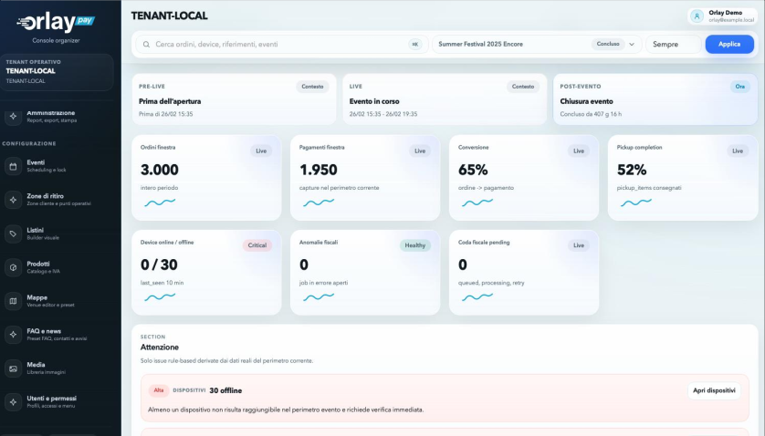
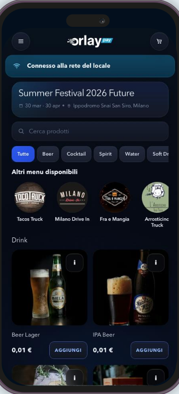
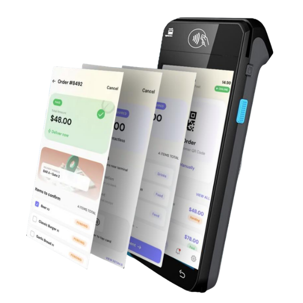

Per festival, stadi, arene e venue ad alta affluenza
Mantieni le vendite fluide quando code, pagamenti e ritiri raggiungono il picco.
Orlay Pay collega una web app QR per i fan, uno schermo di servizio per lo staff e una regia di controllo per l’organizzatore. I fan ordinano e pagano dal telefono o completano al bar, lo staff serve più velocemente ordini già preparati e il team vede domanda, ricavi e congestione dei ritiri per zona in tempo reale.
Nessun download app
Pagamento online o al bar
Ritiro per zona
Dashboard ricavi live
Pensato per i picchi evento
Dati evento illustrativi
Gate A
21:35
3 alert
Andamento nel tempo
Ultimi 60 min
Aree critiche
Ora
Bar Main Stage
Hospitality Nord
Merch Gate B
Priorità operativa
Apri ritiro B
Bar Main Stage supera la soglia
Cos'è Orlay Pay?
Una piattaforma unica per il commerce nel giorno dell'evento.
Orlay Pay non è solo uno strumento di pagamento. È un livello operativo per food & beverage, hospitality, aree VIP, merchandising e punti di ritiro dedicati durante gli eventi live.
Prima dell'evento
Configura menu, prezzi, zone di ritiro, punti di servizio e flussi dedicati per ogni pubblico.
Durante l'evento
Permetti ai fan di ordinare dal telefono, allo staff di servire ordini strutturati e al team di monitorare la pressione live per area.
Dopo l'evento
Capisci cosa ha venduto, dove si sono formate le code, quali zone hanno performato meno e cosa migliorare nel prossimo evento.
Il collo di bottiglia
Dati demoNei picchi di domanda il ricavo sparisce.
Quando i fan devono scegliere, pagare, aspettare e chiedere dove ritirare, la coda diventa una perdita di vendite.
Picco live
-32%
21:35
Trend vendite
Prima della coda
Coda al picco
Monitor pressione live
Le vendite si perdono prima del checkout
2x
I fan lasciano la fila, comprano meno o rimandano l'acquisto quando l'attesa sembra incerta.
Lo staff smette di servire e inizia a risolvere problemi
+38%
Gli operatori perdono tempo a ricostruire ordini, verificare pagamenti e spiegare il ritiro.
I manager vedono il problema troppo tardi
T+1
Ricavi, code, stato dei ritiri e performance di zona sono spesso divisi tra strumenti diversi.
L'evento successivo parte da ipotesi
Dopo
Senza dati chiari, staffing, pricing e layout si decidono sulla percezione invece che sulle evidenze.
Ricavo a rischio
32%
La domanda non servita diventa rinuncia, attesa o scontrino più basso.
Regia operativa
Un unico flusso connesso: ordina, paga, servi, controlla.
Orlay Pay collega il percorso del fan, il lavoro dello staff e la control room dell'organizzatore nei momenti in cui ogni minuto conta.
I fan ordinano più velocemente
Scansionano un QR code, vedono il menu corretto, ordinano dal telefono e ricevono istruzioni chiare per il ritiro.
Lo staff serve più velocemente
Ogni ordine arriva strutturato, con articoli, stato del pagamento, codice di ritiro e prossima azione già visibili.
Gli organizzatori agiscono in tempo reale
Vedono ricavi live, ordini in attesa, pressione sui ritiri e zone critiche prima che la congestione diventi vendita persa.
Ogni evento migliora il successivo
Usa i dati post-evento per ottimizzare pricing, staffing, layout e progettazione dell'offerta.
Dashboard organizzatore
Controlla l'evento mentre il ricavo è ancora in gioco.
Monitora incassi, ordini, pressione sui ritiri, punti di servizio e aree critiche da un'unica vista operativa live.
Quando una zona va in sovraccarico, il team può aprire una nuova corsia di ritiro, spostare lo staff, indirizzare gli ospiti, mettere in pausa prodotti non disponibili o promuovere un punto di servizio più veloce prima che la coda diventi ricavo perso.
Rileva la pressione
Individua zone sovraccariche, code al ritiro e rallentamenti del servizio mentre accadono.
Scegli la prossima azione
Apri corsie, sposta lo staff, sospendi prodotti o reindirizza gli ospiti da una sola vista live.
Proteggi il ricavo live
Intervieni prima che la congestione diventi ordini abbandonati e vendite perse.

Incassi live per area
Ordini in attesa ritiro
Punti critici
Ticket medio
Mix prodotti
Azione consigliata
Zona critica rilevata
Apri ritiro B
Sposta 2 membri dello staff alla Food Court
Indirizza i fan al punto di ritiro disponibile più vicinoFan app
Una web app QR che trasforma ogni telefono in un canale di vendita.
I fan aprono Orlay Pay da un QR code, senza scaricare nulla dagli store. Vedono il menu dell'evento, ordinano dal posto, pagano online o completano al bar e ricevono istruzioni chiare per il ritiro.
Web app QR
Nessun download app
Ordine
92%
Pagamento
84%
Ritiro
76%
Fan journey
Scansiona, ordina dal posto

Mostra prodotti, prezzi e disponibilità corretti per ogni zona, pubblico o punto di servizio.
Permetti ai fan di pagare dal telefono e riduci la seconda coda al banco.
Se il pagamento online non è il percorso giusto, il fan può completare l'acquisto al bar senza perdere l'ordine.
Punto di ritiro, codice, tempo stimato e indicazioni restano sempre visibili sul telefono.

App POS staff
Più velocità al banco, meno improvvisazione sul campo.
Il pre-ordine arriva già strutturato. L’operatore vede totale, stato e prossima azione senza ricostruzioni manuali.
Percorsi e aree
L’evento diventa più leggibile.
Aree, tempi e percorsi diventano leggibili per pubblico e staff, così ogni punto di servizio sa cosa fare nei momenti di picco.
Summer Festival
Aree operative
Live sync
Coda alta, apri ritiro B
Flusso regolare
Accesso dedicato
01
Ordine
Menu e disponibilità per zona
02
Pagamento
Checkout dal telefono
03
Ritiro
Punto e tempo stimato chiari
Push staff
Apri corsia veloceFan app
Mostra percorso miglioreUtile per food court, bar, hospitality, VIP, merch e punti di ritiro dedicati.
Contesti ideali
Pensato per eventi dove ogni minuto di coda costa ricavo.
Orlay Pay è adatto a contesti con alta densità di pubblico, più punti di servizio e domanda concentrata in finestre brevi.
Festival
Concerti
Stadi e palazzetti
Food court
Hospitality
Aree VIP
Merchandising
Eventi corporate
Post-evento
Il valore non finisce a fine serata.
Leggi cosa converte, cosa rallenta e dove si perde domanda. Usa i dati per migliorare pricing, staffing, layout e offerta del prossimo evento.
Report evento
Summer Festival
21:40
Performance per area
+18%
Quali zone vendono e quali rallentano.
Prossima azione suggerita
Riposiziona staff e ritiro rapido sulla food court prima del prossimo picco.
Demo Orlay Pay
Vuoi capire dove il tuo evento sta perdendo vendite?
Prenota una demo: analizziamo insieme flussi, punti bar, aree critiche e opportunità di ricavo.
Richiedi una demo